Our Member Companies
RCAF CC-177 Globemaster III. Photo: RAF-YYC, CC BY-SA 2.0.
Manitoba Aerospace represents a broad membership from SMBs to OEMs.
Our aerospace and defence industries are world leaders in numerous areas including: composites research, design and fabrication; gas turbine engine repair and overhaul; aircraft engine testing and certification; and space craft systems and support.
Along with these global leaders, Manitoba has a network of SMBs that compete and supply into world markets on six (6) continents.
43 member companies
-
A.Adams Supply (1969) Ltd
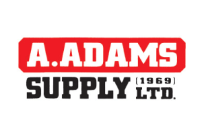
Located in Winnipeg, Manitoba, Canada, we are a comprehensive Industrial Distributor of Supplies for Industry, Construction, and Manufacturing. Operating from a 30,000 sq. ft warehouse, we service the Manitoba, Northwest Ontario, and Saskatchewan regions.
Service from our facility is provided by a dedicated team of order desk, counter sales, and technical support staff that can deliver a wide variety of Industry solutions for all clients.
With an unrivaled depth of inventory on products ranging from cutting tools, abrasives, industrial and construction fasteners, power tools, MRO products as well as safety supplies, A.Adams Supply (1969) Ltd has aligned itself with brands such as Milwaukee Power tools, Robertson Screws, UCAN, Walter Surface Technologies, Pferd Abrasives, Seco and Widia cutting tools. By leveraging our depth of expertise, we are providing exceptional value for high-performance products that are able to exceed the client’s expectations. Large enough to support and service clients of any size, innovative enough to adapt to an ever-changing business environment that today’s successful organizations require from their supply chain partners.
Give us the opportunity to examine how we can aid your organization in the achievement of a higher level of success for your business today.
-
Aero Recip
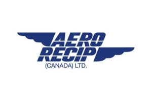
Founded in 1998, Aero Recip is the largest piston engine overhaul shop in Canada. Their experienced technicians and industry specialists have consistently delivered quality, service and respect.
Located in the centre of North America, with 31,800 square feet and the largest core-pool in the country, quick turnaround is the standard.
Aero Recip Canada is a Gregorash Aviation company, an association that assures every Aero Recip customer efficient access to a wide range of aviation products and services.
-
APB Tool Control
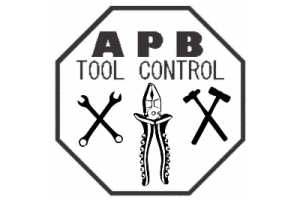
Customized tool storage and organization.
-
Argus Industries
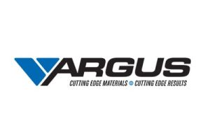
Argus’ Aerospace Division has the ability to respond instantly to any of your urgent Aerospace requirements. Whether it is an AOG or just a scheduled molded or fabricated product, Argus will deliver on time, every time.
Argus warehouses a variety of specialty high grade materials that allow them to respond instantly to meet your needs. Argus has been a tier 1 supplier in aerospace for over 15 years and demonstrates the ability to deliver a consistently superior product. Their wealth of long term employees, strong tribal culture, and LEAN principals, enable them to provide solid product knowledge and service to ensure the highest quality of manufactured seals, gaskets and elastomeric products.
-
Babcock Canada Aerial firefighting
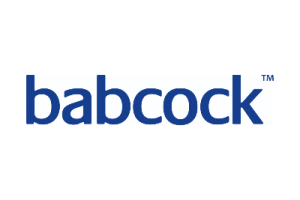
Babcock Canada is a wholly owned subsidiary of the Babcock International Group, which employs over 35,000 skilled staff who design, build, manage, operate and maintain assets that are vital to the delivery of many key public services, both in the UK, Canada, and overseas. Our market-leading reputation is based on one key fact: Babcock is a partner which can be trusted to deliver™.
Babcock is a Canadian ISO 9001 & 14001 and OHSAS 18001 registered company, and employs over 400 personnel across four locations: Halifax, Ottawa, Winnipeg and Victoria.
Babcock delivers a fully integrated and professional aerial firefighting management service, underpinned by their own proprietary technology investments and internally delivered mission specialist pilot training. They operate both fixed-wing and rotary-wing aircraft throughout Europe and in Canada. -
Boeing Winnipeg Aerospace composites
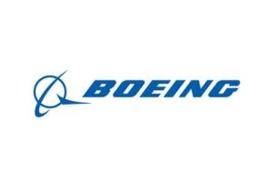
Boeing Canada Winnipeg is the largest Canadian Boeing site and the largest aerospace composite manufacturer in the country. The site produces nearly 1,000 end item composite parts and assemblies for Boeing Commercial Airplanes, specifically for the 737, 747, 767, 777 and 787 airplane models.
-
Business Development Bank of Canada
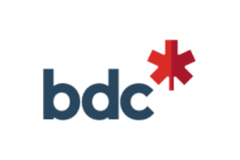
BDC helps create and develop strong Canadian businesses through financing, advisory services and capital, with a focus on small and medium-sized enterprises.
BDC is governed by an independent Board of directors, which ensures the highest standard of corporate governance practices.
-
Cadorath
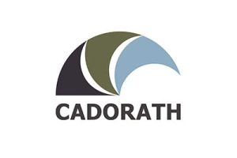
Cadorath is a multi-faceted international company with several divisions, products and services. With over 55 years of experience, Cadorath provides products and services to the aviation, industrial, agricultural and consumer goods sectors and have remained committed to quality, reliability and customer satisfaction.
-
Canadian Propeller
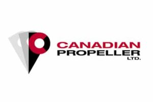
Established in 1991 by licensed, experienced propeller technicians; Canadian Propeller has been meeting the needs of our customers for over 20 years.
Canadian Propeller specializes in aircraft propeller & governor maintenance and servicing of all types of aircraft from Cessna 150’s to Beech 1900’s and Dash 8’s. We also provide propeller fleet consulting, management and valuations. Specific industry propeller training is also available to suit your particular needs.
-
Castellan Information Security Services Inc. Cyber readiness, CMMC and CPCSC
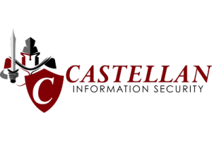
Castellan is a Winnipeg-based and 100% Canadian-owned company that offers professional cyber security services focusing on helping their clients build and maintain their enterprise IT security programs to protect one of their most important assets…their information.
We have been in business since 2019, and our certified security experts specialize in Governance, Risk, Compliance, and Preparedness services such as CMMC / CPCSC certification readiness, penetration testing, vulnerability scanning, threat risk assessments, and business continuity planning. With the cyber threat landscape constantly evolving, specialized security expertise is required beyond what can be provided by internal IT teams or IT service providers.
-
Collins Aerospace Dash 8 cargo conversion
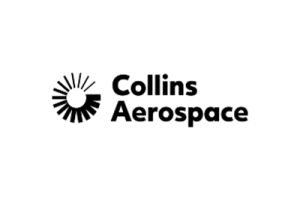
Collins Aerospace is a leader in technologically advanced, intelligent solutions that help to redefine the aerospace and defense industry. We dedicate our capabilities, comprehensive portfolio and expertise to solving customers’ toughest challenges and meeting the demands of the global market. The company employs more than 78,000 people in more than 300 locations worldwide.
-
Dimatec Inc.
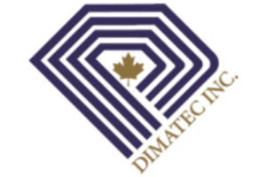
Founded in 1988, Dimatec has built a reputation for excellence by consistently delivering superior products and outstanding service, establishing ourselves as trusted leaders in our industry.
Our mission is simple: engineer high-quality products that expose the earth’s precious resources, all while ensuring a sustainable future for everyone.
We specialize in designing and manufacturing cutting-edge metal-bond diamond products, drilling equipment components, and precision machined parts tailored for the mineral exploration, mining, geotechnical, Aerospace, Defence and energy sectors.
AS9100D certified and proudly Canadian-owned and operated, our facility sits at the heart of North America, allowing us to quickly transport our innovative solutions to customers around the globe.
-
Elasto Proxy
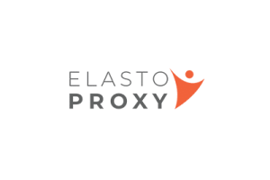
Elasto Proxy is a family-owned company with strong roots, strong business relationships and a growing global presence in the rubber and plastics industry. Founded in 1989 by Doug and Donna Sharpe, this “small family boutique” flourished in Quebec, before expanding first in Ontario and then in South Carolina. They also bring their innovative business philosophy to China, where Elasto Proxy’s technical services and practical knowledge satisfy customers in this rapidly growing Asian market.
With facilities in Canada and the United States, Elasto Proxy is a leading supplier of high quality, low volume rubber and plastic components. Its manufacturing capabilities include waterjet
cutting, film molding, injection molding, composite rolling and hot rolling of 3M foam rubber tapes. Flexible work cells and a paint chamber for surface coating are also available to meet your custom manufacturing needs. -
Encore Metals
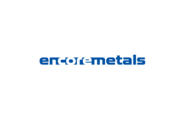
-
Enduron
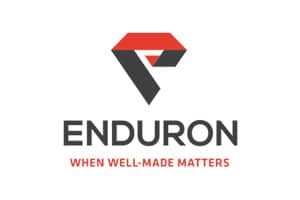
Specializing in custom metal alloy fabrication, Enduron produces superior quality finished products which are designed to meet and exceed their customers’ expectations. Enduron’s sophisticated system of product design, inventory control, project scheduling, inspection procedures, customer service, and documentation help ensure the company’s position as a preferred supplier and manufacturer.
-
EnviroTREC Cold-weather engine testing
EnviroTREC is a non-profit organization that is partnered with GLACIER, a limited partnership between Rolls-Royce and Pratt & Whitney.
The EnviroTREC assets include all of the test systems and the thrust stand which are located at the GLACIER Facility in Thompson, Manitoba. This facility is the most modern engine icing certification facility in the world. It is capable of testing engines whose fan diameter is up to 140 inches while producing up to 150,000 pounds of thrust.
-
Fast Air Executive Aviation Services
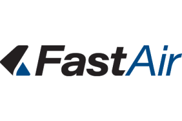
Fast Air Executive Aviation is a premier provider of industry leading aviation services. Based at the Richardson Winnipeg International Airport, they offer executive turboprop and jet charter, air ambulance, aircraft management, and helicopter services out of their private business class terminal.
Fast Air is a certified AMO, authorized for maintenance on a wide range of aircraft, including Bell 206 series helicopters. Fast Air holds instrument, avionics, structures, and component ratings and offers a variety of avionics capabilities in their Transport Canada approved avionics shop. Fast Air is an authorized dealer for Garmin Flight Deck and Avionics products.
-
GE Aviation Canada Engine research and testing
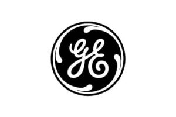
GE Aviation Canada operates the Research Testing and Development Centre in Winnipeg and a manufacturing plant in Bromont, Quebec.
GE Aviation engines power over 80% of the RCAF aircraft and 62% of global commercial airliners and executive jets. GE also supports its products in country by working with well-established Canadian-based repair and overhaul entities, including Standard Aero, Magellan and Vector Aerospace.
GE Canada is recognized for having delivered high quality Industrial and Regional Benefits as well as having significantly exceeded its Canadian contractual obligations.
-
KF Aerospace Maintenance and defence training
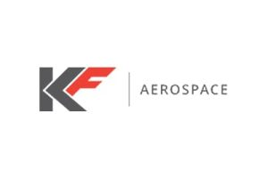
KF Aerospace, formally Kelowna Flightcraft, is dedicated to providing superior aircraft maintenance services, aircraft leasing and defence training programs.
KF Aerospace Defence Programs provides fleet support, fleet upgrade programs, and full turnkey solutions. KF Aerospace provides FWSAR & RCAF Pilot Training and has been a proud supporter of DND programs in Canada for over 25 years.
-
Magellan Engine parts, rockets, satellites
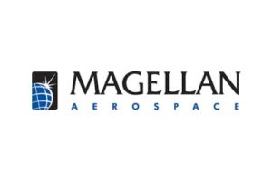
Magellan Aerospace, Winnipeg has over 85 years of knowledge and experience in the aerospace industry. The main facility is located in Winnipeg, MB, and there are also satellite locations in Rockwood, MB and Ottawa, ON. The company employs about 700 people.
Magellan manufactures complex aeroengine components and advanced aerostructures fabrications, as well as proprietary products; including small satellite buses, propulsion products, and the Wire Strike Protection System (WSPS™) for civil and military helicopters.
-
Mark=1T Consulting Firm LTD. Defence and Arctic cyber
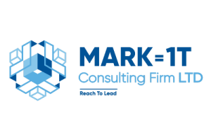
Mark=1T Consulting Firm LTD. is an emerging Canadian cybersecurity and technology firm focused on strengthening security and resilience across defence, Arctic and Northern operations, and rural and remote communities. Through strategic partnerships with industry, government, and technology leaders, Mark=1T aims to advance cybersecurity innovation and Canadian capabilities in support of a more secure and resilient Canada.
-
MDs AeroTest Cold-weather engine testing
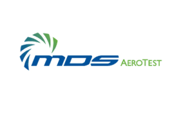
Founded in 1985, MDs has steadily risen to a position of global prominence in the provision of turnkey test facilities and test systems for the aviation, industrial, and marine gas turbine engine community . Through its subsidiary, MDs Aerotest, is operating and maintaining the largest and most advanced cold weather test and research facility for gas turbines in the world.
-
MicroPilot Autopilots
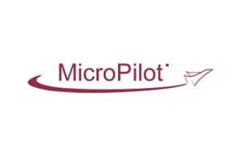
MicroPilot is the leading manufacturer of miniature autopilots for unmanned aerial vehicles (UAV) and micro aerial vehicles (MAV). Weighing 28 grams, the MP2028 is the world’s smallest full functional autopilot. Capabilities include airspeed hold, altitude hold, turn coordination, GPS navigation, plus autonomous operation from launch to recovery.
With a global roster of more than 200 clients in over 44 countries, MicroPilot sells autopilots and autopilot accessories worldwide to academic, military, and private research institutions, as well as to UAV end users and manufacturers.
-
mode40
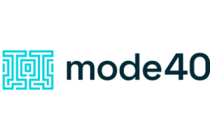
mode40 builds software that gives operators a single connected view of their data, decisions and operations. Our founder pioneered our work over 20 years inside one of Canada’s largest primary food processors, which was acquired for over a billion dollars in 2018. Today we bring those proven results to manufacturers everywhere.
-
Neeginan Education, Training and Employment Services, Inc. (NETES)
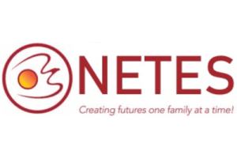
Neeginan Education, Training and Employment Services, Inc. (NETES), previously known as Neeginan College of Applied Technology / Centre for Aboriginal Human Resource Development Inc. (CAHRD)’s in-house technical and vocational post-secondary training division. NETES works closely in partnership with industry, business and training institutions to ensure that the students are prepared for jobs in high-demand industries.
NETES offers a variety of full-time training programs that deliver hands-on work experience in a sustainable career. NETES provides free information sessions on the current programs, followed by a tour of the college facilities.
-
PAL Aerospace ISR, in-service support, training
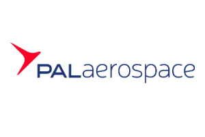
A proud member of the Exchange Income Corporation family of companies, PAL Aerospace is a Canadian-owned and operated global aerospace and defence company focusing on intelligence, surveillance, reconnaissance, in-service support solutions, aircraft engineering design, and aircrew training. Governments, militaries, and industry internationally recognize PAL Aerospace for on-time/on-budget delivery and high-reliability rates. PAL Aerospace offers a single point of accountability for its programs and is the trusted choice for clients worldwide.
-
Precision ADM
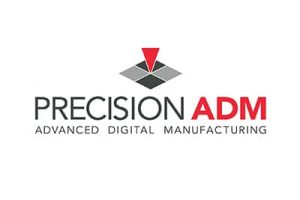
Precision ADM identifies, develops, and manufactures high value application opportunities in additive manufacturing. Whether on our own, or working with clients, partners, and suppliers, we access the latest and highest quality production additive and subtractive equipment, processes, and expertise.
With a strong focus on metal and polymer parts for medical and aerospace applications, we endeavour to find the part design and manufacturing solution that best meets the material, quantity, quality, and cost characteristics required for that specific application.
-
Propworks Propeller Systems
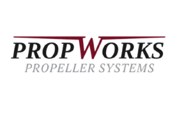
PropWorks was established in 1999 in Winnipeg. In 2006, they opened a second location in Edmonton. In 2015, the Winnipeg shop moved to their current location on Bannister Road. In the 22 years they have been in business, they have grown to be the largest aircraft propeller overhaul and repair company in Western Canada with over 25,000 square feet of space and almost 30 employees, 20 of whom are in Winnipeg. The path to growth in our industry is to continually expand their capabilities and that has always been their approach. They have a truly international clientele with work coming in from Canada, the United States, Africa and South America.
-
Red River College Polytech Training and applied research
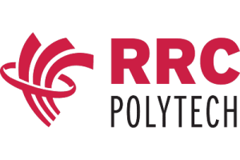
Manitoba is home to the third largest aerospace sector in Canada – and Red River College Polytech is an active partner, training our workforce to participate in all aspects of the aviation and aerospace sector. RRC Polytech grads are found throughout industry – overhauling aircraft engines, maintaining aircraft, building components, or in management positions such as Directors of Maintenance and Quality Assurance.
-
Royal Aviation Museum of Western Canada
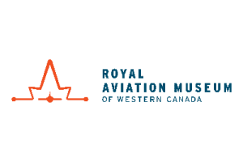
The Royal Aviation Museum was founded in 1974 to preserve and share the stories of Canada’s aviation history through exhibits of bush planes, military aircraft, and some of Canada’s earliest aviation innovations. Its collection includes the remains of nearly 100 heritage aircraft including Canada’s first helicopter, the prototype Fairchild Super 71, and the Junkers JU-52/1m “Flying Boxcar” which can be seen nowhere else in the world. The new Royal Aviation Museum will share the stories of Manitoba’s early aviators and the birth of commercial aviation in Canada while providing STEM-based interactive experiences for visitors of all ages. The new Museum will be located adjacent to the Winnipeg James A. Richardson International Airport and is set to open in late 2021.
-
RT Logistix Ltd
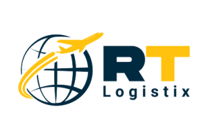
Established as Rolly’s Transfer Co. Ltd. in 1966, Rolly’s provided logistics services to residential and commercial clients within the Manitoba marketplace. In the early 2000’s, Rolly’s partnered with a major aerospace manufacturer to provide 3PL warehousing, transportation, and distribution services. During this time, Rolly’s obtained the certification in ISO 9001:2015 and AS9120 programs.
Now rebranded as RT Logistix Ltd, they are proud to provide 3PL services and supply chain management to more leaders in the aerospace industry, thus allowing clients to concentrate on their core businesses.
-
SkyAlyne RCAF aircrew training
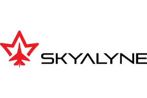
SkyAlyne is a team of defence, training, simulation, and aviation industry experts assembled from across Canada. Together, we are working with the Royal Canadian Air Force (RCAF) to prepare the next generation of Pilots and Aircrew as the Future Aircrew Training (FAcT) program provider.
SkyAlyne was formed in 2018 as a partnership between CAE and KF Aerospace, two Canadian aviation, training, and defence leaders. The partnership was built to jointly answer the call for the FAcT program. SkyAlyne’s headquarters are in Ottawa, Ontario, with FAcT program operational bases in Winnipeg, MB, Southport, MB, and Moose Jaw, SK.
-
Southport Aerospace Centre Inc. Flight training airfield
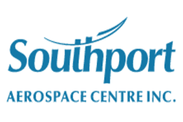
Southport is a not-for-profit property management and development company, located 3 km south of Portage la Prairie, Manitoba, Canada. Its goal is to establish a world-class business centre balanced with lifestyle, wellness, and recreation facilities. Featuring aviation and aerospace training facilities, research and development of new products, light manufacturing, educational institutions, beautiful open spaces, a golf course, and a fitness centre. Southport is also the proud home of 3 Canadian Forces Flight Training School.
-
StandardAero Engine overhaul
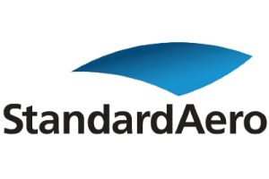
Founded in 1911, StandardAero has become one of the aerospace industry’s largest independent maintenance, repair and overhaul (MRO) providers in the world. StandardAero’s success is the outgrowth of the synergistic merger of businesses with complementary specialties that have exponentially increased their capabilities and generated unprecedented customer commitment and value.
-
TABAQ Smart Aerotech Manufacturing Inc.
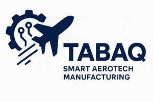
TABAQ Smart Aerotech Manufacturing Inc., a Winnipeg-based startup, is dedicated to delivering rapid response, mobile, and professional Non-Destructive Testing (NDT) services. These services enable Aircraft Operators to minimize downtime and help AMOs overcome the NDT bottleneck, expedite operational growth, and maximize their operational efficiency.
TABAQ is an Approved Maintenance Organization (AMO) certified by Transport Canada that has built its NDT services from the ground up with a focus on maximizing responsiveness, flexibility, efficiency and professionalism. TABAQ offers NDT services anywhere in Manitoba within 72 hours using a local team of CGSB Level II certified NDT technicians. NDT services are also provided in northwest Ontario and eastern Saskatchewan within 5 business days. Currently, TABAQ offers LPI/FPI, Eddy Current, and MPI services either at their customer’s site (whether on-wing, in hanger, or in shop) or at TABAQ’s facility. UT will be added to TABAQ’s services soon.
-
United Aero Group
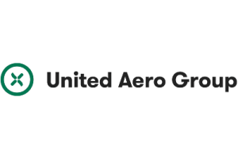
United Aero Group is a world leader in Rotor Blade and Composite Structure repair technologies for fixed-wing and rotary-wing aircraft. They provide helicopter rotor blade and composite structure repairs for Bell, Eurocopter, MD Helicopters, Schweizer and Sikorsky helicopter models.
United Aero Group also provides fixed-wing aircraft composite repairs for Airbus, Boeing, Bombardier, Cessna, DeHavelland, Pilatus, Fokker and many other aircraft models.
-
University of Manitoba Engineering research
As the first university established in western Canada, the University of Manitoba has been at the centre of research in Manitoba for more than a century. From the development of canola and advances in wireless communication, to the prevention of Rh disease of the newborn and breakthrough discoveries concerning the transmission of HIV/AIDS, our researchers have made contributions that have had a global impact.
The Technology Transfer Office is ready to facilitate your connections with the University of Manitoba.
-
Vaayo Vision Consulting Inc.
Vaayo Vision Consulting Inc. is an agile professional services firm based out of Winnipeg, Manitoba. They serve as a strategic technical advisor for corporations looking to scale operations, execute complex technological transitions, and adopt advanced digital frameworks.
They specialize in bridging the gap between traditional engineering and modern digital ecosystems. Their firm delivers targeted, high-impact interventions designed across project management, technology implementation, and operational scaling to protect your project margins, eliminate operational waste, and maximize production throughput.
Their leadership brings over 15+ years of hands-on experience in engineering leadership, project execution, and cross-functional team coordination.
Their solutions are powered by active, globally recognized credentials, including Professional Engineer (P.Eng.), Project Management Professional (PMP) and Prosci Certified Change Management status.
They partner with organizations across highly regulated and capital-intensive sectors to modernize operations and drive sustainable growth within Advanced Manufacturing; Aerospace & Defense, Supply Chain & Logistics and Heavy Industry & Processing. -
Vidir Solutions
Vidir Solutions is a Canadian material handling innovator specializing in Automated Storage and Retrieval Systems (ASRS) engineered to support high-precision manufacturing and complex industrial environments. Proudly designed and manufactured in Canada, Vidir supports domestic industry with vertically integrated engineering, fabrication, and assembly capabilities.
Our high-density storage solutions help aerospace manufacturers and suppliers maximize floor space, streamline material flow, and improve inventory accuracy across production, maintenance, and parts storage operations. From Vertical Lift Modules (VLMs) to custom carousels and secure storage systems, our solutions are built for demanding workflows where uptime, accuracy, and traceability matter.
-
West Canitest R&D Inc. (WestCaRD)
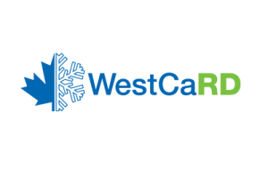
West Canitest R&D Inc., formerly known as WestCaRD, is a not-for-profit corporation that facilitates economic, technical and specialized workforce development and growth opportunities in the environmental testing, research and development sector in Manitoba. In partnership with GE Canada and StandardAero, WestCaRD undertakes aircraft engine testing as well as research and technology development at unique test facilities located at the Winnipeg James Armstrong Richardson International Airport.
-
Winnipeg Economic Development & Tourism
Winnipeg Economic Development & Tourism is the city’s lead economic development and tourism agency. Governed by a private-sector board and guided by the needs of local business and tourism communities, we drive inclusive, sustainable growth in and around Winnipeg by attracting investment, talent and visitors. Through our work, it helps make Winnipeg a more vibrant and prosperous place to live, work, invest and visit for the benefit of residents and businesses.
-
World Trade Centre Winnipeg
The World Trade Centre Winnipeg (WTC Winnipeg) is a bilingual, non-profit organization committed to supporting Manitoba businesses in their growth and international success. As a trusted partner of the Province of Manitoba and a member of the World Trade Centers Association, WTC Winnipeg provides entrepreneurs and companies with expert guidance in trade, market intelligence, training, and connections to help them expand within Canada and around the world.
Through its services, events, and global network, WTC Winnipeg empowers Manitoba businesses to trade with confidence and reach new markets.

Join the cluster.
Northern lights over spruce. Photo: Emmanuel Milou, CC BY-SA 2.0.